PERCH Wiki
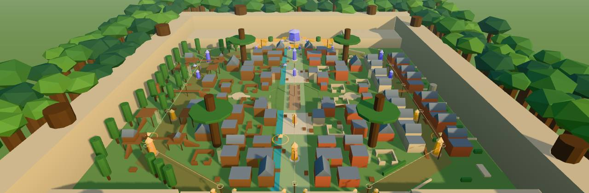
PERCH is a third-person team hero shooter that runs in your browser. Two flocks of six birds fight along three lanes of a city built inside an old forest. Shoot, dash, slide and ride the Updraft cables; earn Seeds from fledglings and fights; spend them in the Magpie's Hoard; and bring down the enemy Patron to win.
This wiki explains every feature of the game. Its numbers are read from the game's own data every time it is rebuilt, so a balance change changes the wiki. Parts of the game that are not built yet are marked Coming in Stage N.
What is playable now

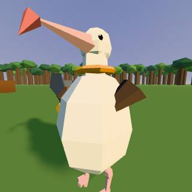
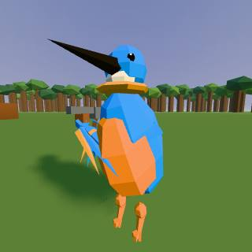

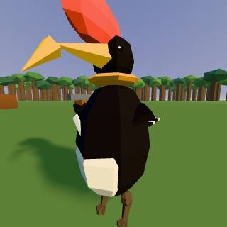
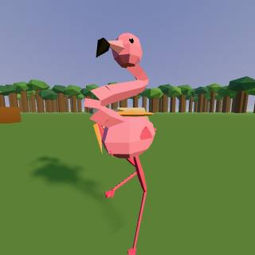
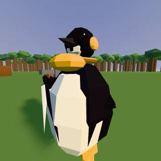


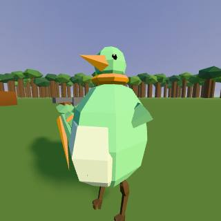

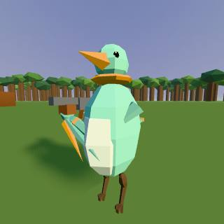
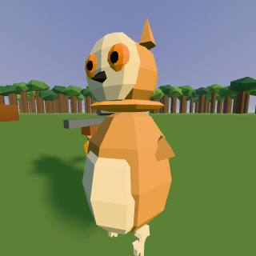
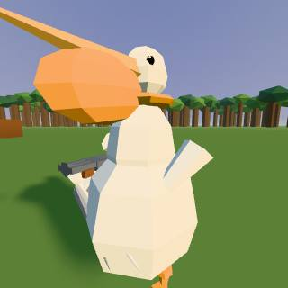
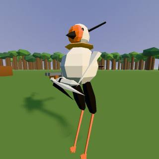

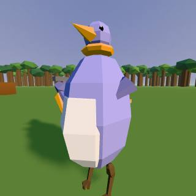

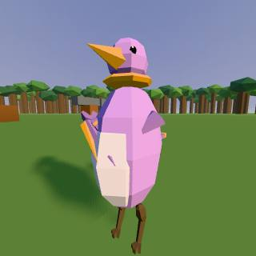
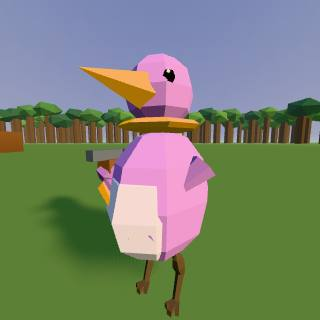
4 more birds are planned: Frigatebird, Cockatoo, Swan, Kiwi.
What's new this stage
- 8 new birds: Hornbill, Flamingo, Penguin, Puffin, Owl, Pelican, Secretarybird, Starling.
- The Magpie's Hoard with 64 items, and levels, Ability Points and Molts from Seeds. See the economy.
- Towers and the two-phase Patrons, so a match can be won by hand.
- A full HUD: minimap, scoreboard, big map, kill feed, damage numbers and sound.
- The Practice Hub with damage and healing dummies.
Quick links
About this wiki
Everything here was written for PERCH and uses the game's original birds, art and names. Pictures are screenshots of the game itself. Press / to search, and click any picture to enlarge it. The site works offline: open wiki/index.html from a checkout.